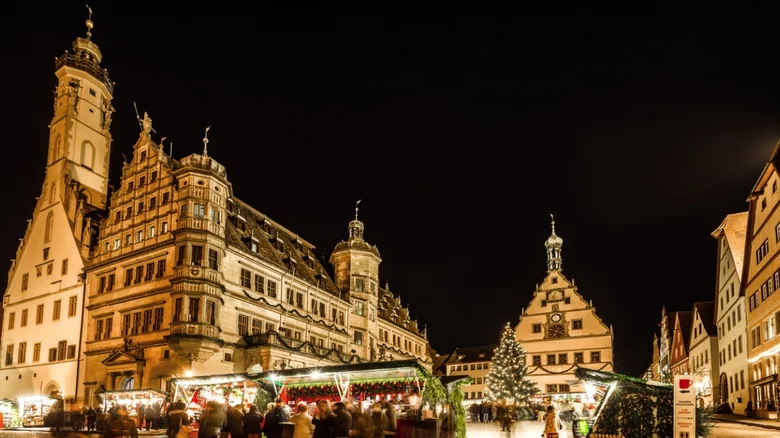
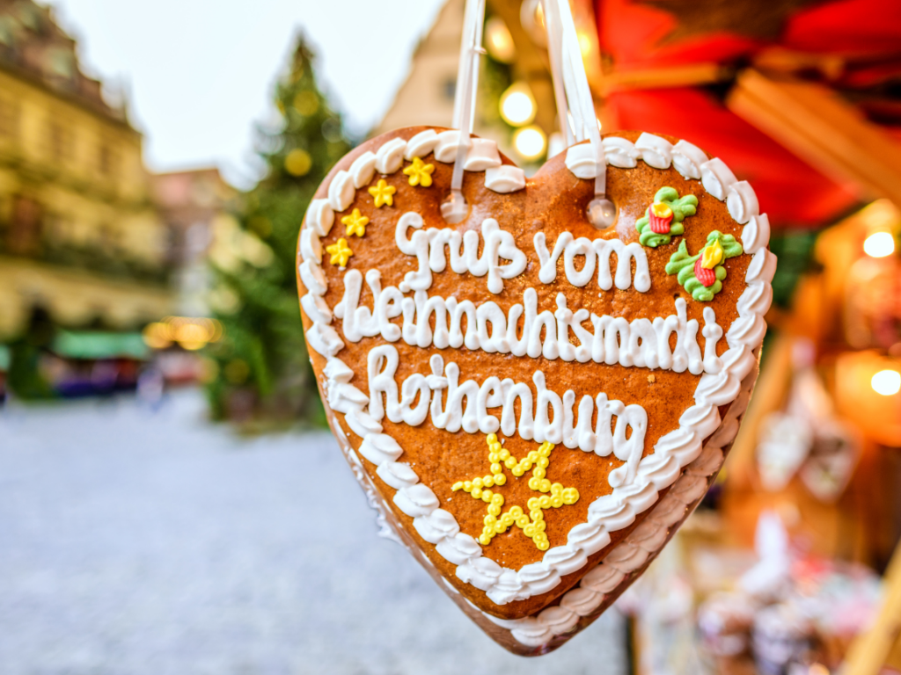

Germany: Rothenburg ob der Tauber

There's no shortage of American towns known for their holiday spirit but the United States certainly doesn't have a monopoly on Christmastime magic. Throughout the world, travelers will find unique local holiday traditions and festive towns lit up with displays, parades, markets, and more. These spots, in particular, are some of the most magical places on Earth to celebrate Christmas.
Medieval Charm
Christmas period aside, Rothenburg ob der Tauber is a perfectly preserved medieval town. Built in the 1200s, it is only 3 kilometers / 2 miles long. Its half-timbered houses, cobbled alleyways and historic architecture are a sight to behold at any time of year. Walking through the town feels like stepping back in time, with every corner seemingly telling a tale from a Brothers Grimm folk story. It’s no surprise, then, that this picture-perfect fairytale town is the backdrop for the festive period.
Indeed, there’s something truly special about Rothenburg during Christmas, especially at night. The glow of the fairy lights illuminate the old timbered medieval buildings, adding even more fairytale wonder to the town – if that was even possible.
Christmas Markets
The heart of Rothenburg’s Christmas magic lies in its enchanting Christmas markets. The main market square, Marktplatz, transforms into a winter wonderland, with stalls adorned with handmade crafts, ornaments, and festive treats. The aroma of mulled wine, roasted chestnuts, and local specialties wafts through the air, inviting visitors to indulge in the spirit of the season.
